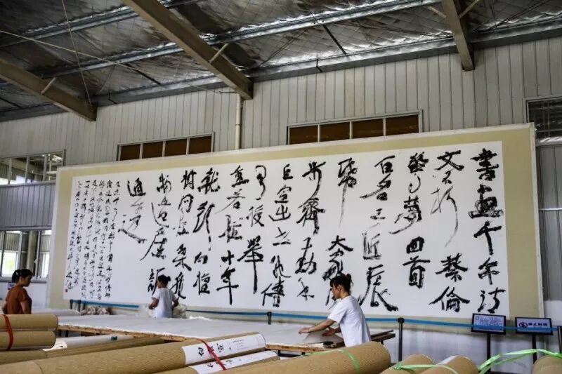
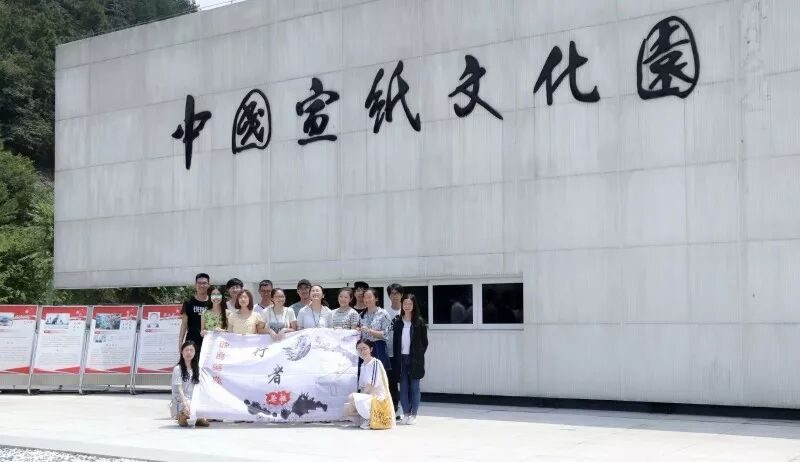

【行者无疆·拾遗皖徽】了解宣纸，走进宣纸文化园

行者无疆拾遗皖徽实践第三日
青檀树花开的时候
是我的生日
青檀树生长的地方
也生长诗
青檀树长得很高
很朴素
浅灰色的树皮
后来成了
董其昌和张大千
笔下的宣纸
青檀树上
是北方的土地
青檀树下
是南方的风
青檀树里
有我生长的影子
———汪国真
前言：在青山碧水之间，在白云深处，有这样一个地方，千年古艺传承不衰，辈辈盛誉经久不绝，这就是泾县。千年以来，这里守护传承着祖辈的智慧手艺，展现着宣纸一千多年的悠久历史，诉说着风云跌宕的故事与传说。

宣纸制作技艺可追溯到唐代，历史悠久，技艺精湛，一直以来都作为皇家贡品进献朝廷。宣纸玉骨冰肌、绵韧洁白，文书典籍、书画珍品赖以千古传存，独特的品质使它和艺术共生，与文化共存，“轻似蝉翼白如雪，抖似细绸不闻声”宣纸的品质引历代文人墨客以其陶冶性情，抒发情感，眷恋终身。宣纸也因此成就了自身的绝代风华。宣纸制作技艺于2006年成为首批国家级非物质文化遗产，并于2009年正式被列入人类非物质文化遗产名录。如此人类文明精华，终有了传承的自信力。
宣纸被称为千年寿纸，不腐不蠹，且纸存越久，性能越好。何以宣纸如此珍贵，少不了四大要素：青檀树皮，沙田稻草，山泉水，以及野生猕猴桃树枝。“纸之制造，首在于料”泾县为丘林地形，青檀树皮质地紧密，厚度高，纤维韧性强，是宣纸原料之上品。泾县地区受长江支流冲击，农田含沙量高，沙田稻草维生素含量高，木质素含量低，易自然漂白。古有山水为上，河水为中，井水为下之语，乌溪山泉水是得天独厚的造纸水源。野生猕猴桃的藤汁是宣纸制作工艺中的纸药，这种天然胶汁溶液是宣纸不粘连的关键。
另外，宣纸文化园一楼场馆以图示方式介绍了宣纸制作的108道工序，精细之至繁复至极，以及红星集团在宣纸制作中的重要地位，介绍宣纸按配料、规格、厚薄、纸纹分类，宣纸独具的四大特性：润墨性、变形性、耐久性，抗虫性等内容，详尽而有序。
二楼场馆陈列种种珍贵的字画真迹和清朝御纸，出于文物保护，严禁拍照。御纸十色龙纹笺色彩饱满，纹路精致，在清代是皇帝御用熟宣，即使经过百年时光洗礼仍旧光彩熠熠，令人神往。即便是纯色的生宣也分为不同规格、不同纸质的考究。展出的近代纪念宣纸也早已绝版，精致的盒子里承装的是年代意义深远的文化珍品。
馆藏名人字画真迹颇多，镇馆之宝便是郭沫若先生的亲笔题词，其他许多文人大家也都以宣纸为载体在此留下许多印记，足见宣纸盛名。
进去后园，将那如叠起宣纸一般的博物馆抛在身后，映入眼帘的是一个大型厂房，在这里有着宣纸制作的重要一环。工人们首先要将历经风吹日晒、千锤百炼的纸浆加入水池，之后加入野猕猴桃树的藤汁以让如云朵一样的纸絮均匀的铺在长达11米的竹帘上。14名工人站在水池两侧，用特制的竹竿进行搅拌让水中的纸浆更加均匀，波澜起伏的水面下，藏着的是一个个纸浆纤维成为宣纸的梦想。在造纸工人的齐心协力下，以一定角度插入水下再缓缓拉起的竹帘上便均匀地铺上了一层纸絮，借助屋顶垂下的两个挂钩的帮助，竹帘上的纸被揭下，便完成了宣纸初步的制作。而贴纸和晒纸师傅的精湛技艺也让湿漉漉的纸帖最终焕发新生，洁白细腻的宣纸最终成型被送去剪纸车间进行进一步的加工。由于丈六的宣纸面积巨大，宏大的呼号声此起彼伏的回响在车间中，师傅们几十年的密切配合保证了这种宣纸的成功率，也在这里孕育出一位坚守手艺的“大国工匠”。裁剪车间的墙壁上，一幅书写在丈六宣纸上的作品，令人不禁慨叹，那流连的墨色，正是借这积淀无数工匠汗水的宣纸，方才得以呈现在世人眼前。
再向后行，那连绵山丘的向阳坡上，皆或多或少有着一些方形的地域，那是青檀皮和稻草在被选中前必须经历的风吹日晒，一年的时光中，他们静静地躺在那里，却在内心孕育着一股无与伦比的力量。群山掩映下一排徽派建筑巍然伫立，这里是实际生产过程的体验区。碓皮过程中木锤与石板的碰撞震荡耳膜，踩浆过程中脚底与纸浆在缸内的融合带来一丝丝触电的新奇，淘洗混浆过后，水池旁，又一位坚守捞纸岗位二十余年的“大国工匠”和他的搭档一起，用心灵相通的默契，手臂翻飞间，在无数个春夏秋冬，默默恪守着每日1000张宣纸的责任，传承着一份时光的记忆。
大凡世间万物都有生命的长度和宽度，自古以来有无数的生命，在完成她的长度与宽度后消失，有多少村庄，大山，河流，因为外部以及内在原因变化消失于无形。唯有宣纸从唐代至今仍然延续着她的长度，放射着她的宽度。
我们欣慰于宣纸这种得天地之造化的先人创造能够被一代代手艺人所继承，让白云深处的故事隽永绵长，这是我们及子孙后代永续的使命和责任。
图片丨行者无疆实践团
文字丨李心悦 徐信步 杨宇晴
责编丨邓子孚 应雨珊
审核丨潘雯雯
行者无疆实践团
QQ：2758025831

随行者一起认识世界
长按二维码关注